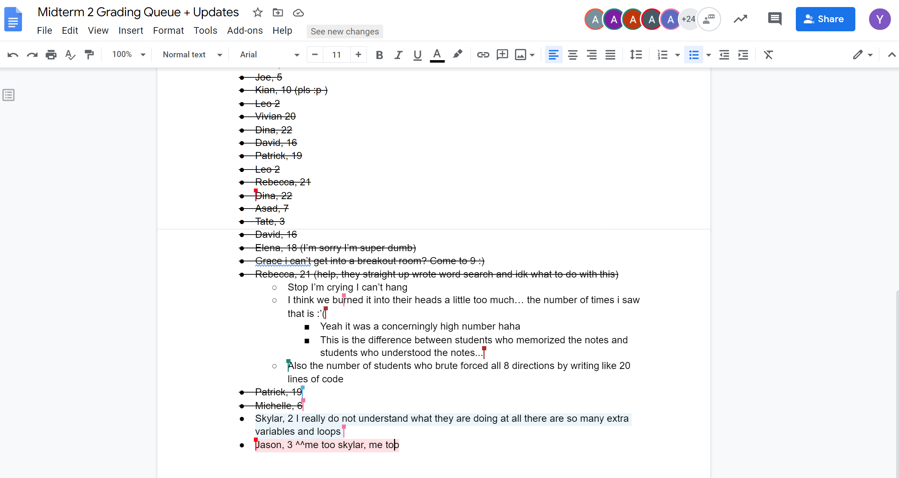
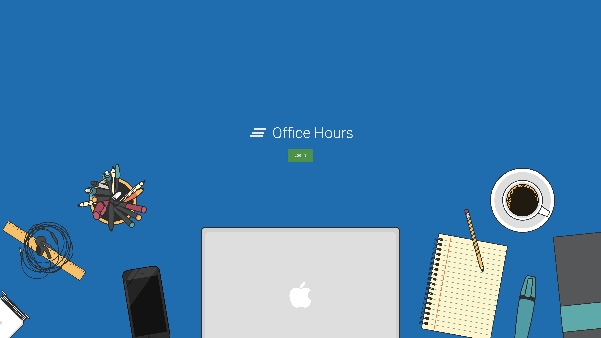

Teaching Assistant and Everything Else
Before admitted as a TA, one very kind TA reached out through email, asked if there was anything I wish to know on being a teaching assitant. Back then never had the courage to ask, and before I ever had the chance to do so, I became a teaching assitance myself :’). Realizing that being a TA is a lot more than just teaching recitations, thought I would record some thoughts here.
Grading
A snippet of how the TA OHQ worksIn the course we TAed, all quizes were graded the day students took them, although have fully expected this coming in as a TA, was surprsied how much we interact while grading.
We would share how a student struggles to write for loops but overcame all obstacles and derived to the right solution, ask about each other’s day, laugh at funny drawings student put on paper, when they finished early or have given up on a problem entirely lol.
Thought grading quizzes would be time consuming and hectic, which turned out to be true, but on the other hand, working with a group of peoeple towards the same goal, laugh/sturggle together along the way, felt that was one thing that made these Tuesday night more attractive than what it could have being.
Hackathon
We host a hackathon every semester, where students get to create an applicaiton using what they learned, with up to 3 other members, within 24 hours. That semester I was in charge of making a hype video for the event that semester, and yeah, I have never really edit a hype video before :’).
It took me 13 hours to complete just the first draft, 6 more hours to render the second draft, and 2 more hours to convince the event lead that I used 19 hours to make this 1.5 minute video lol. Looking back, the video I put together was hardly a hype video, nonetheless, putting my skills into use, was surprised how much more confident/conpedent I felt, knowing that I can help people around me in more ways than one.
Term Project Mentor
 Placeholder, please don't sue me if you are in the picture :')
Placeholder, please don't sue me if you are in the picture :')
I was lucky enough to have great students as my TP mentee to begin with. Every one of my mentee was on time to every meeting, all past MVP by the deadline, respond to my email spam within 2 hours, and all reached out for help when they needed it, which made my job, so, so much easier.
It was a pleasure working with them, and they also taught me that, when students hit a threshold on coding proficiency, debugging helps were no longer their top priority in TP. Some wished to tackle a problem they are interested in, some wanted a good score to boost their overall grades, and some just tried to have some fun. Understand other’s motivation and help them fulfill that, felt that was something I leraned working with them, even after being a TP mentor.
Professor OH
Placeholder, please don't sue me if you are in the picture :')Not that I didn’t expect students coming to these, but I was shooked how much less office hours was about professors, when we did them online. During that semester specifically, professor would invite student into a breakout room and talk individually, leaving the rest of queue waiting in the main room with the moderator TA.
Have considered myself a listener more than a storyteller, so it was always a bit awkwards, stuck with a room full with students, looking at each other, trying to find a topic to chat about, AFTER I have asked them how the weather is in Pittsrbugh 27 times :’).
Nonetheless, felt that was where I observed the most from other students and TAs. Fake birthday letter someone wrote to their penmate, where the professor got their hawaiian shirt (it was from Amazon), what people ate for lunch, conversations/stories like these made me reazlied we were much, much more complicated than just TAs/students, and it was nice getting to know them beyond the scope of the course :).
Burnout
This TA position required about 12-15 hours of commitment weekly, equivlent to a 12 unit course at the university. Burn out was something that I felt that semester, with turbulance in and outside of the course, I was again a bit lost on what I wish to do in the future. Instead of going it through myself though, the support from students/TA was, overwhleming to say the very least.
Some took the time and recognized the time that I put into this job, some gave me advices on how I should approach other’s feedback. I got compared to Master Oogway once (didn’t know what that was and had to search it up lol), listened to others talk about their struggles outside of the course and how they attempted to resolve it.
Looking back, still not sure how helpful these was, I felt I have done quite a terrible job at understanding these, but if anything, I was happy that I wasn’t alone going through these, and appreciated their company along the way.
Ending Thoughts
I guess I was conviced, towards the end of the semester, on why being a TA is ‘fun and exciting’, and something people wish to continue doing ‘until they graduate’. It was less about the materials you get to teach your student, and definitely not the pay :/. To me it was more about the experience, working with people that I look up to, talkiong with others that I may not otherwise have the chance to meet, and learn about different ways about approacing problems.